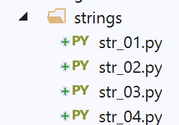
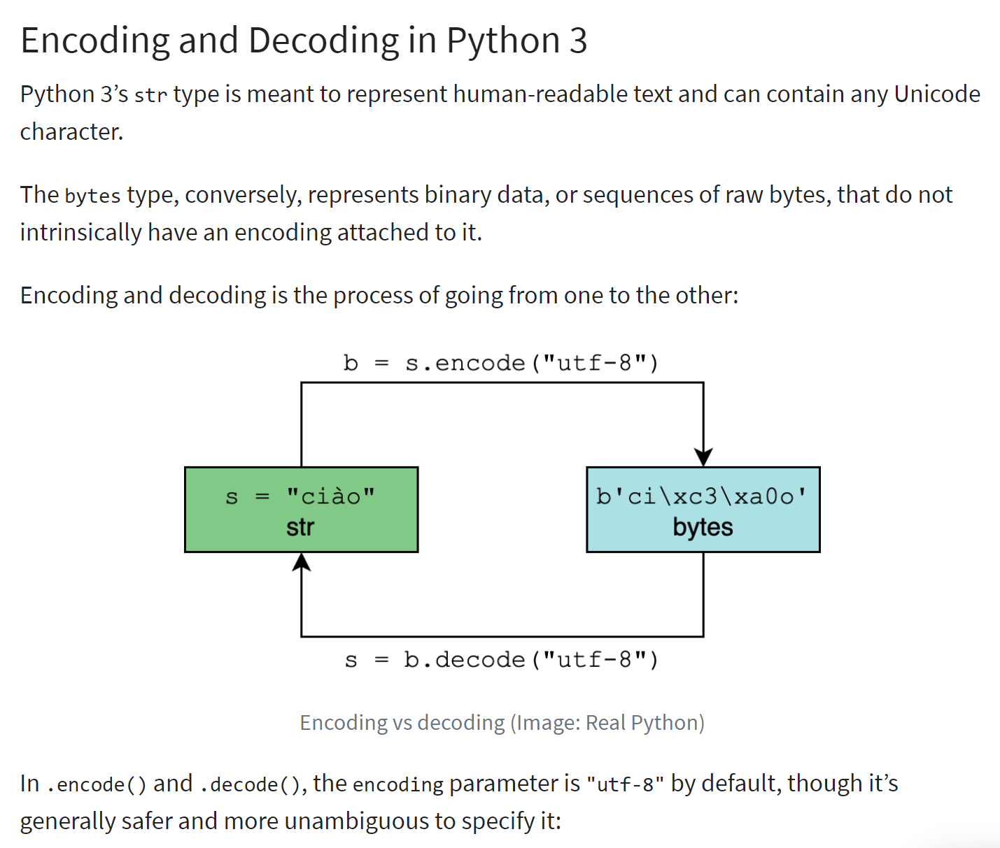

4. Le stringhe di caratteri

4.1. Script [str_01]: notazione delle stringhe
Lo script [str_01] è il seguente:
# stringhe di caratteri
# tre possibili notazioni
chaine1 = "un"
chaine2 = 'deux'
chaine3 = """hélène va au
marché acheter des légumes"""
# visualizzazione
print(f"chaine1=[{chaine1}], chaine2=[{chaine2}], chaine3=[{chaine3}]")
Commenti
- riga 3: una stringa delimitata da virgolette ";
- riga 4: una stringa delimitata da apostrofi ';
- riga 5: una stringa delimitata da tripli apici """. In questo caso, la stringa può estendersi su più righe;
I risultati sono i seguenti:
C:\Data\st-2020\dev\python\cours-2020\python3-flask-2020\venv\Scripts\python.exe C:/Data/st-2020/dev/python/cours-2020/python3-flask-2020/strings/str_01.py
chaine1=[un], chaine2=[deux], chaine3=[hélène va au
marché acheter des légumes]
Process finished with exit code 0
4.2. Script [str_02]: i metodi della classe <str>
Lo script [str_02] illustra alcuni dei metodi della classe <str>, ovvero la classe delle stringhe:
# funzioni sulle stringhe di caratteri
# stringa in minuscolo
print(f"'ABCD'.lower()={'ABCD'.lower()}")
# stringa in maiuscolo
print(f"'abcd'.upper()={'abcd'.upper()}")
# carattere n. 2
print(f"'cheval[2]={'cheval'[2]}")
# sottostringa con i caratteri 5 e 6
print(f"'caractères accentués'[5:7]={'caractères accentués'[5:7]}")
# sottostringa a partire dal carattere 4 compreso
print(f"'caractères accentués'[4:]={'caractères accentués'[4:]}")
# sottostringa fino al carattere 6 escluso
print(f"'caractères accentués'[:5]={'caractères accentués'[:5]}")
# lunghezza della stringa
print(f"len('123')={len('123')}")
# eliminazione degli spazi prima e dopo la stringa
print(f"' abcd '.strip()=[{' abcd '.strip()}]")
# eliminazione degli spazi che seguono la stringa
print(f"' abcd '.rstrip()=[{' abcd '.rstrip()}]")
# eliminazione degli spazi che precedono la stringa
print(f"' abcd '.lstrip()=[{' abcd '.lstrip()}]")
# il termine "spazio" comprende in realtà diversi caratteri
str = ' \r\nabcd \t\f'
print(f"str.strip()=[{str.strip()}]")
# sostituzione di una sottostringa con un'altra
print(f"'abcd'.replace('a','x')={'abcd'.replace('a', 'x')}")
print(f"'abcd'.replace('ab','xy')={'abcd'.replace('ab', 'xy')}")
# ricerca di una sottostringa: restituisce la posizione o -1 se la sottostringa non viene trovata
print(f"'abcd'.find('bc')={'abcd'.find('bc')}")
print(f"'abcd'.find('bc')={'abcd'.find('Bc')}")
# inizio di una stringa
print(f"'abcd'.startswith('ab')={'abcd'.startswith('ab')}")
print(f"'abcd'.startswith('x')={'abcd'.startswith('x')}")
# fine di una stringa
print(f"'abcd'.endswith('cd')={'abcd'.endswith('cd')}")
print(f"'abcd'.endswith('x')={'abcd'.endswith('x')}")
# passaggio da un elenco di stringhe a una stringa
print(f"'[X]'.join(['abcd', '123', 'èéà'])={'[X]'.join(['abcd', '123', 'èéà'])}")
print(f"''.join(['abcd', '123', 'èéà'])={''.join(['abcd', '123', 'èéà'])}")
# passaggio da una stringa a un elenco di stringhe
print(f"'abcd 123 cdXY'.split('cd')={'abcd 123 cdXY'.split('cd')}")
# recuperare le parole di una stringa
print(f"'abcd 123 cdXY'.split(None)={'abcd 123 cdXY'.split(None)}")
I commenti abbinati ai risultati ottenuti sono sufficienti per comprendere lo script. I risultati sono i seguenti:
C:\Data\st-2020\dev\python\cours-2020\python3-flask-2020\venv\Scripts\python.exe C:/Data/st-2020/dev/python/cours-2020/python3-flask-2020/strings/str_02.py
'ABCD'.lower()=abcd
'abcd'.upper()=ABCD
'cavallo[2]=e
'caratteri accentati'[5:7]=tè
'caratteri accentati'[4:]=caratteri accentati
'caratteri accentati'[:5]=carac
len('123')=3
' abcd '.strip()=[abcd]
' abcd '.rstrip()=[ abcd]
' abcd '.lstrip()=[abcd ]
str.strip()=[abcd]
'abcd'.replace('a','x')=xbcd
'abcd'.replace('ab','xy')=xycd
'abcd'.find('bc')=1
'abcd'.find('bc')=-1
'abcd'.startswith('ab')=True
'abcd'.startswith('x')=False
'abcd'.endswith('cd')=True
'abcd'.endswith('x')=False
'[X]'.join(['abcd', '123', 'èéà'])=abcdQZXW2HTMLBW1hdZQX123QZXW2HTMLBW1hdZQXèéà
''.join(['abcd', '123', 'èéà'])=abcd123èéà
'abcd 123 cdXY'.split('cd')=['ab', ' 123 ', 'XY']
'abcd 123 cdXY'.split(None)=['abcd', '123', 'cdXY']
Process finished with exit code 0
4.3. Script [str_03]: codifica delle stringhe (1)
Lo script [str_03] illustra alcuni concetti relativi alla codifica delle stringhe:
# codifica dei caratteri
# stringa di tipo str
str = "hélène va au marché acheter des légumes"
print(f"str=[{str}, type={type(str)}]")
# codifica utf-8
print("--- utf-8")
bytes1 = str.encode('utf-8')
print(f"bytes1={bytes1}, type={type(bytes1)}")
bytes2 = bytes(str, 'utf-8')
print(f"bytes2={bytes2}, type={type(bytes2)}")
# codifica iso-8859-1
print("--- iso-8859-1")
bytes1 = str.encode('iso-8859-1')
print(f"bytes1={bytes1}, type={type(bytes1)}")
bytes2 = bytes(str, 'iso-8859-1')
print(f"bytes2={bytes2}, type={type(bytes2)}")
# codifica latin1=iso-8859-1
print("--- latin1")
bytes1 = str.encode('latin1')
print(f"bytes1={bytes1}, type={type(bytes1)}")
bytes2 = bytes(str, 'latin1')
print(f"bytes2={bytes2}, type={type(bytes2)}")
La codifica di una stringa di caratteri di tipo <str> produce una stringa binaria in cui ogni carattere della stringa è rappresentato da uno o più byte. Esistono diversi tipi di codifica. Lo script sopra riportato presenta i due più diffusi in Occidente: «utf-8» e «iso-8859-1», noto anche come «latin1».
Il principio della codifica/decodifica è illustrato di seguito (rif. |https://realpython.com/python-encodings-guide/ |):

Commenti
- righe 4-5: la stringa iniziale che verrà codificata. Le istanze del tipo <str> sono stringhe Unicode |https://docs.python.org/3/howto/unicode.html|, |https://realpython.com/python-encodings-guide/ |;
- righe 6-11: due modi per codificare una stringa di caratteri in UTF68:
- riga 8: str.encode('utf-8) ;
- riga 10: bytes(str, 'utf-8');
- righe 12-17: si ripete la stessa operazione con la codifica 'iso-8859-1';
- righe 18-23: 'latin1' è un altro nome della codifica 'iso-8859-1';
I risultati sono i seguenti:
C:\Data\st-2020\dev\python\cours-2020\python3-flask-2020\venv\Scripts\python.exe C:/Data/st-2020/dev/python/cours-2020/python3-flask-2020/strings/str_03.py
str=[hélène va au marché acheter des légumes, type=<class 'str'>
--- utf-8
bytes1=b'h\xc3\xa9l\xc3\xa8ne va au march\xc3\xa9 acheter des l\xc3\xa9gumes', type=<class 'bytes'>
bytes2=b'h\xc3\xa9l\xc3\xa8ne va au march\xc3\xa9 acheter des l\xc3\xa9gumes', type=<class 'bytes'>
--- iso-8859-1
bytes1=b'h\xe9l\xe8ne va au march\xe9 acheter des l\xe9gumes', type=<class 'bytes'>
bytes2=b'h\xe9l\xe8ne va au march\xe9 acheter des l\xe9gumes', type=<class 'bytes'>
--- latin1
bytes1=b'h\xe9l\xe8ne va au march\xe9 acheter des l\xe9gumes', type=<class 'bytes'>
bytes2=b'h\xe9l\xe8ne va au march\xe9 acheter des l\xe9gumes', type=<class 'bytes'>
Process finished with exit code 0
Commenti
- riga 4: si nota che i caratteri accentati sono stati codificati su due byte:
- é: [\xc3\xa9], che corrisponde alla sequenza binaria 11000011 10101001;
- è: [\xc3\xa8], che corrisponde alla sequenza binaria 11000011 10101000;
- riga 7: con la codifica ISO-8859-1, questi due caratteri accentati sono codificati in modo diverso:
- é: [\xe9], che corrisponde alla sequenza binaria 11101001;
- è: [\xe8], che corrisponde alla sequenza binaria 11101000;
4.4. Script [str_04]: codifica delle stringhe di caratteri (2)
Lo script [str_04] presenta altri due tipi di codifica: 'base64' e 'quoted-printable'. Queste due codifiche non codificano stringhe di caratteri Unicode, ma oggetti binari. Ad esempio, quando si allega un documento Word a un’e-mail, questo verrà sottoposto a una delle due codifiche a seconda del client di posta utilizzato. Questo vale per la maggior parte dei file allegati.
Lo script è il seguente:
# codifica / decodifica
import codecs
# stringa
print("---- chaîne unicode")
str1 = "hélène va au marché acheter des légumes"
print(f"str1=[{str1}], type(str1)={type(str1)}")
# codifica utf-8
print("---- chaîne unicode -> binaire utf-8")
bytes1 = bytes(str1, "utf-8")
print(f"bytes1=[{bytes1}], type(bytes1)={type(bytes1)}")
# decodifica utf-8
print("---- binaire utf-8 -> chaîne unicode")
str2 = bytes1.decode("utf-8")
print(f"str2=[{str2}], type(str2)={type(str2)}")
print(f"str2==str1={str2 == str1}")
# codifica iso-8859-1
print("---- chaîne unicode -> binaire iso-8859-1")
bytes2 = bytes(str1, "iso-8859-1")
print(f"bytes2=[{bytes2}], type(bytes2)={type(bytes2)}")
# decodifica iso-8859-1
print("---- binaire iso-8859-1 -> chaîne unicode")
str3 = bytes2.decode("iso-8859-1")
print(f"str3=[{str3}], type(str3)={type(str3)}")
print(f"str3==str1={str3 == str1}")
# errore di decodifica - bytes1 è in UTF-8 - lo si decodifica in ISO-8859-1
print("--- binaire utf-8 (décodage iso-8859-1) --> chaîne unicode")
str4 = bytes1.decode("iso-8859-1")
print(f"str4=[{str4}], type(str4)={type(str4)}")
# codifica in UTF-8 di una stringa Unicode
print("---- chaîne unicode -> binaire utf-8")
bytes3 = codecs.encode(str1, "utf-8")
print(f"bytes3=[{bytes3}], type(bytes3)={type(bytes3)}")
# codifica in base64 di una stringa binaria UTF-8
print("---- binaire utf-8 -> binaire base64")
bytes4 = codecs.encode(bytes1, "base64")
print(f"bytes4=[{bytes4}], type(bytes4)={type(bytes4)}")
# ritorno alla stringa Unicode originale
print("---- binaire base64 -> binaire utf-8 -> chaîne unicode")
str6 = codecs.decode(bytes4, "base64").decode("utf-8")
print(f"str6=[{str6}], type(str6)={type(str6)}")
# codifica di una stringa binaria in quoted-printable
print("---- binaire utf-8 -> binaire quoted-printable")
str7 = codecs.encode(bytes1, "quoted-printable")
print(f"str7=[{str7}], type(str7)={type(str7)}")
# ritorno alla stringa Unicode originale
print("---- binaire quoted-printable -> binaire utf-8 -> chaîne unicode")
str8 = codecs.decode(str7, "quoted-printable").decode("utf-8")
print(f"str8=[{str8}], type(str8)={type(str8)}")
Commenti
- riga 2: il modulo [codecs] consente di eseguire le codifiche «base64» e «quoted-printable». Ne può eseguire molte altre;
- righe 4-7: la stringa Unicode che verrà sottoposta a varie codifiche;
- righe 9-12: codifica utf-8. Si ottiene un file binario;
- righe 14-18: decodifica UTF-8 per tornare alla stringa Unicode originale;
- righe 20-29: si ripete lo stesso processo con la codifica 'iso-8859-1';
- righe 31-34: viene mostrato un errore di decodifica:
- riga 33: bytes1 è una stringa binaria codificata in 'utf-8'. La si decodifica in 'iso-8859-1';
- righe 36-39: un altro modo per codificare una stringa di caratteri in utf-8 con il modulo [codecs];
- righe 41-44: una stringa binaria 'utf-8' viene codificata in 'base64';
- righe 46-49: mostrano come passare dalla stringa binaria 'base64' alla stringa Unicode originale;
- righe 51-59: si ripete questo processo utilizzando la codifica "quoted-printable" al posto di "base64";
I risultati sono i seguenti:
C:\Data\st-2020\dev\python\cours-2020\python3-flask-2020\venv\Scripts\python.exe C:/Data/st-2020/dev/python/cours-2020/python3-flask-2020/strings/str_04.py
---- chaîne unicode
str1=[hélène va au marché acheter des légumes], type(str1)=<class 'str'>
---- chaîne unicode -> binaire utf-8
bytes1=[b'h\xc3\xa9l\xc3\xa8ne va au march\xc3\xa9 acheter des l\xc3\xa9gumes'], type(bytes1)=<class 'bytes'>
---- binaire utf-8 -> chaîne unicode
str2=[hélène va au marché acheter des légumes], type(str2)=<class 'str'>
str2==str1=True
---- chaîne unicode -> binaire iso-8859-1
bytes2=[b'h\xe9l\xe8ne va au march\xe9 acheter des l\xe9gumes'], type(bytes2)=<class 'bytes'>
---- binaire iso-8859-1 -> chaîne unicode
str3=[hélène va au marché acheter des légumes], type(str3)=<class 'str'>
str3==str1=True
--- binaire utf-8 (décodage iso-8859-1) --> chaîne unicode
str4=[hélène va au marché acheter des légumes], type(str4)=<class 'str'>
---- chaîne unicode -> binaire utf-8
bytes3=[b'h\xc3\xa9l\xc3\xa8ne va au march\xc3\xa9 acheter des l\xc3\xa9gumes'], type(bytes3)=<class 'bytes'>
---- binaire utf-8 -> binaire base64
bytes4=[b'aMOpbMOobmUgdmEgYXUgbWFyY2jDqSBhY2hldGVyIGRlcyBsw6lndW1lcw==\n'], type(bytes4)=<class 'bytes'>
---- binaire base64 -> binaire utf-8 -> chaîne unicode
str6=[hélène va au marché acheter des légumes], type(str6)=<class 'str'>
---- binaire utf-8 -> binaire quoted-printable
str7=[b'h=C3=A9l=C3=A8ne=20va=20au=20march=C3=A9=20acheter=20des=20l=C3=A9gumes'], type(str7)=<class 'bytes'>
---- binaire quoted-printable -> binaire utf-8 -> chaîne unicode
str8=[hélène va au marché acheter des légumes], type(str8)=<class 'str'>
Process finished with exit code 0
- righe 14-15: una stringa binaria UTF-8 viene decodificata in una stringa Unicode utilizzando il decodificatore errato 'iso-8859-1'. Di conseguenza, alcuni caratteri Unicode generati risultano errati, in questo caso i caratteri accentati;
- righe 18-19: la codifica «base64» consiste nell’utilizzare 64 caratteri ASCII (codificati su 7 bit) per codificare un qualsiasi dato binario. Ciò aumenta, come si può vedere, la dimensione del dato binario della stringa;
- righe 22-23: anche la codifica «quoted-printable» consiste nell’utilizzare i caratteri ASCII (codificati su 7 bit) per codificare un qualsiasi dato binario;
Va ricordato che quando si riceve un file binario, ad esempio dalla rete Internet, che rappresenta un testo, per recuperarlo è necessario conoscere le codifiche a cui è stato sottoposto.